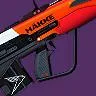
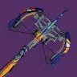
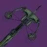
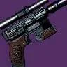
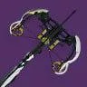

说明
本排名仅为各个枪的类别之内排名，不能作跨类别比较（例如：狙击枪的 S 梯队强度并不等同融合步枪的 S 梯队强度）。
注解中提及到的「双／三硬直组合」指大口径弹药、自带反势不可挡勇士功能的枪、阻止力 Perk 三者的任意组合，这些 Perk 能让战斗人员更容易被你的子弹打出硬直，从而有提升生存的效果。
「弹药生成 Perk」包括空中扳机／沙场备战等传统意义上帮助产弹的 Perk，亦指事不过四、精准连击等凭空生成子弹的 Perk。
划掉的字表示该来源现已不可获取。
其他
| 武器 | 图标 | 排名 | 评级 | 属性 | 框架 | 赛季 | 来源 | 勇士 | 弹药生成 | 枪管 | 弹匣 | 大师 | Perk 1 | Perk 2 | 起源特性 | 注解 |
|---|---|---|---|---|---|---|---|---|---|---|---|---|---|---|---|---|
| 翻新 A499 | 1 | S | 动能 | 干扰 | 28 | 反叛 | 26 | 槽化枪管 | 广口弹匣 | 填装 | 速射瞄准 孤狼 直击要害 | 聚合充能 嫉妒刺客 | 加速突击 | 首个同类 框架很强 但 3 号位一般 | ||
| 韦兰迪夫-D |  | 2 | S | 烈日 | 微型导弹 | 29 | 赛雀联赛 | 25 | 高速发射 高爆弹药 | 加大弹匣 高爆弹药 | 填装 | 空中扳机 治疗弹匣 爆破分配器 | 辉耀炽热 铤而走险 燃烧野心 | Häkke 突入武装 | 基础产弹甚至高于薄荷 | |
| 完美逆行 | 3 | S | 缚丝 | 微型导弹 | 29 | 巅峰行动 | 9 | 高速发射 高爆弹药 | 附加弹匣 高爆弹药 | 填装 | 沙场备战 信标弹药 幼雏 | 武器大师 连锁反应 切割 | 加速突击 | 弹药生成 + 游走 + 伤害 Perk 都优秀 | ||
| 好建议 |  | 4 | S | 虚空 | 高冲击力 | 28 | 忠诚纪念碑 萨瓦拉 | 60 | 超轻导轨 | 重型弩弹 锯齿弩弹 充能弩弹 | 操控性 | 嫉妒军械库 弩弹拾荒者 枯萎凝视 | 高地 盒式呼吸法 | 如果高地在 上可用 可能成为伤害选项 | ||
| Ψ永恒 IV | 5 | A | 电弧 | 微型导弹 | 28 | 忠诚纪念碑 萨瓦拉 | 11 | 高速发射 高爆弹药 | 附加弹匣 高爆弹药 | 填装 | 涓流充能 爆破分配器 信标弹药 | 我为人人 肾上腺素成瘾 风暴涌动 | 加速突击 | 在火箭脉冲 DPS 时代基本没意义 | ||
| 沉没 |  | 6 | B | 冰影 | 高冲击力 | 27 | 忠诚纪念碑 | 26 | 超轻导轨 | 重型弩弹 锯齿弩弹 充能弩弹 | 操控性 | 自动填装枪套 弩弹拾荒者 光中藏弹 | 聚合充能 墓碑 冰冷弹匣 | 奋斗串联 | 很酷的清怪选择 | |
| 无礼言论 |  | 7 | B | 电弧 | 动态热量 | 28 | 无序边界 | 65 | 槽化枪管 | 电离散热器 超频散热器 | 冷却效率 | 空中扳机 冷却饰物 | 精准工具 铤而走险 | 加速突击 | LP 虚弱后的时代用途不大 暴击 MDPS 还行 但其他方面被压过 | |
| 隐晦沙漏 |  | 8 | C | 电弧 | 高冲击力 | 27 | 永恒沙漠 | 47 | 超轻导轨 | 重型弩弹 锯齿弩弹 充能弩弹 | 操控性 | 脉冲增幅器 萤火虫 弩弹拾荒者 | 元素磨砺 蜻蜓 武器大师 | 参考框架 | 没有双打伤害 但填装/伤害 Perk 优秀 |